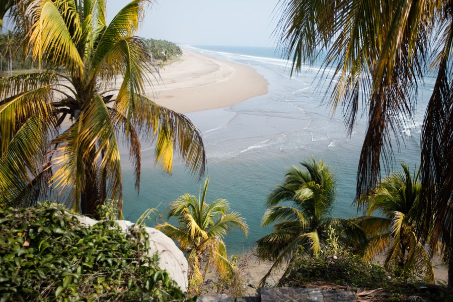
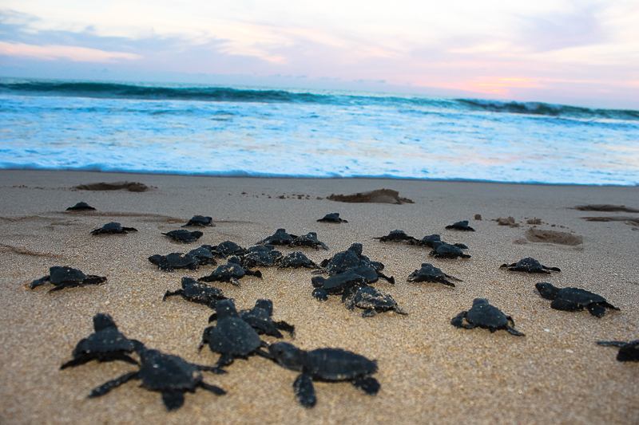
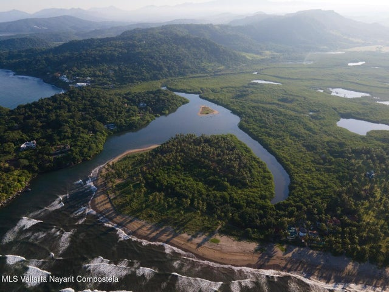
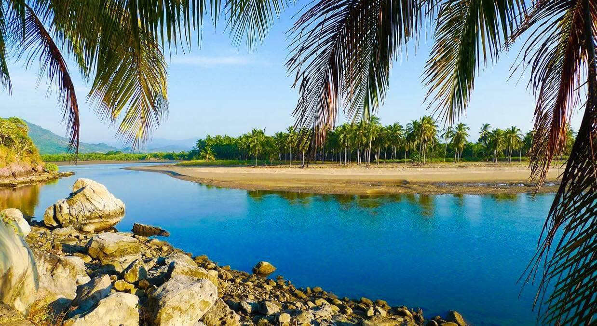
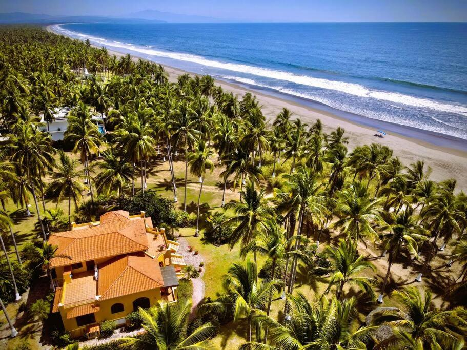
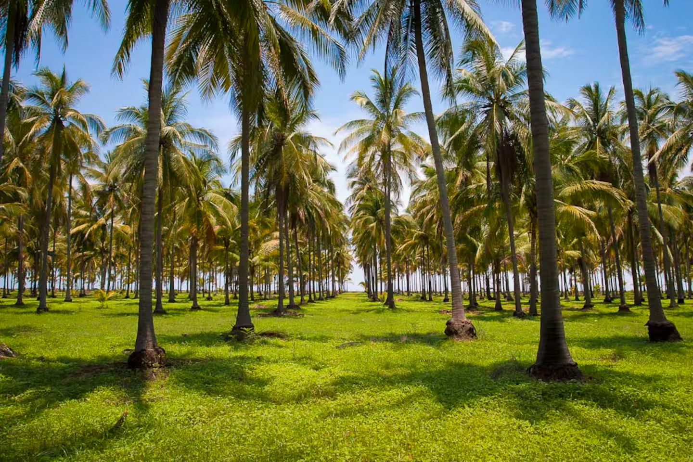

El santuario escondido del Municipio de Compostela
En el sitio de una antigua plantación cocotera, Playa Las Tortugas se despliega como un paraíso virgen de 8 kilómetros de arena suave, lejos de las multitudes y los grandes desarrollos hoteleros.
Este destino es famoso por su enfoque en el ecoturismo y la conservación. Aquí, el lujo no son los edificios altos, sino la privacidad de sus villas ecológicas, el sonido ininterrumpido del mar y la oportunidad de conectar profundamente con la naturaleza.





Actividades diseñadas para amar la tierra
Sé parte de la conservación. Dependiendo de la temporada, puedes participar en la liberación de tortugas golfinas al mar.
Navega en kayak o paddle board por los canales del estero, hogar de cientos de especies de aves migratorias y locales.
Recorre la inmensidad de la playa al atardecer montando a caballo, una de las experiencias más icónicas de la zona.
Sin vendedores ambulantes ni ruido urbano. Aquí vienes a leer un libro, caminar y disfrutar del silencio.
La biodiversidad es asombrosa. Prepara tu cámara para capturar garzas, pelícanos y flora tropical única.
La casi nula contaminación lumínica convierte las noches en un espectáculo astronómico impresionante.
Playa Las Tortugas es un destino para aventureros que buscan confort y aislamiento:

Zona Norte de Compostela
Plantación y Selva
Villas Ecológicas
Aves y Tortugas